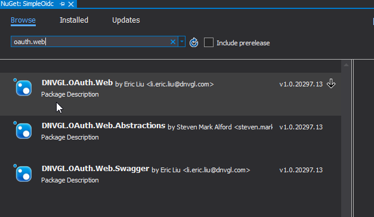

[TOC]
Overview
DNVGL.OAuth.Web is a .NETCore library for developers to simplify the work of setting up OpenId Connection authentication (OIDC) such as Veracity or Azure AD B2C for ASP.NET Core web project.
Package Install
To install the DNVGL.OAuth.Web package, you may need to add the package feed below to your nuget sources.
https://dnvgl-one.pkgs.visualstudio.com/_packaging/DNVGL.SolutionPackage/nuget/v3/index.json

Search nuget package of DNVGL.OAuth.Web and add it to your project. 
Basic Usage
To simplify your authentication implementation of Veracity for your ASP.NET Core web project, you need to add 3 blocks of codes to Startup.cs.
- Add namespace reference.
using DNVGL.OAuth.Web;
- Add
AddOidcextension method toConfigureServices.
public void ConfigureServices(IServiceCollection services)
{
...
services.AddOidc(o =>
{
o.TenantId = "<TenantId>";
o.SignInPolicy = "b2c_1a_signinwithadfsidp";
o.ClientId = "<ClientId>";
o.Scopes = new[] { "<Scope>" };
o.CallbackPath = "/signin-oidc";
});
...
}
- Add
UseAuthenticationandUseAuthorizationextension methods toConfigure.
public void Configure(IApplicationBuilder app, IWebHostEnvironment env)
{
...
app.UseAuthentication().UseAuthorization();
...
}
- Then you could launch your project and access an action in a controller that decorated with
[Authorize], a challenge request will be sent to IDP(Microsoft or Veracity) to start the authentication process, and theHttpContextwill be filled with authentication result.